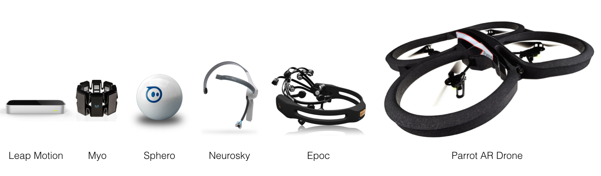
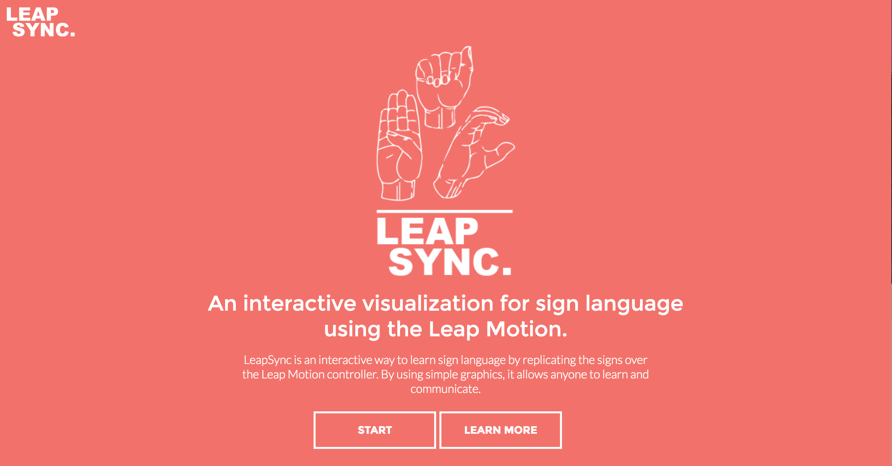

Experimenting with
CREATIVE TECHNOLOGIES
Created by Charlie Gerard / @charlie__gerard
About me

Name: Charlie Gerard
Role: Dev
Creative Technologies??
Some believe that "Creativity has the potential to be revolutionised with technology", or view the field of Creative Technology as helping to "disrupt" the way people today interact with computers, and usher in a more integrated, immersive experience.
Basically...

Awesomeness!
Examples
Kinect

V motion project
Biosensors

Wing installation

Eunoia
Hardware

Gridi - Physical sequencer
AR / VR

When we land - VR Music video
"But what's the business value?"
PURPOSE
Tech tats
Sentiri
Smartest Cart
Chaotic Moon Studio's BASE Project: The Food Cart of the Future
Room-E
Uniqlo - Brain sensor
Experiments

Motion controlled Sphero & Drone
Hand tracking sign language tool
Remote control IoT lights

VortoLight project
Web
JavaScript Awesomeness

- AR / VR
- 3D
- Audio
- Computer Vision
Virtual Reality

VR Procedural city
3D
Music Visualizer
Computer Vision
Face Tracking 3D graphics
Experimentation allows us to learn and expand our mind to what is possible
Creative Technology Tools
Graphics
- WebGL
- Three.js / p5.js
- Canvas
- Processing
- OpenFrameworks
- Cinder
- vvvv
Hardware
- Oculus Rift / Samsung VR headset / Google Cardboard
- Microsoft Hololens / Meta 2
- Arduino / RaspPi / Intel kits, etc...
- Kinect / Leap Motion / Myo
- Neurosky / EPOC / Muse
Now what?
- Observe
- Experiment
- Start small
- Have fun
Resources
Codepen
Code Doodles
Chrome Experiments
Android Experiments
Creative Applications
The Creative Project
Kadenze - Creative coding tutorials
Hackster